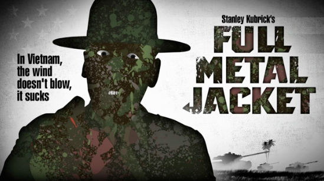
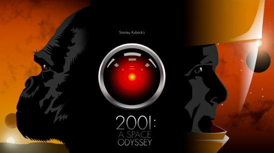
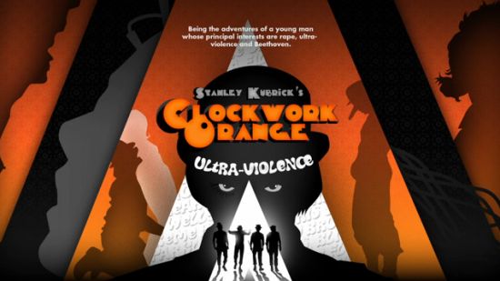
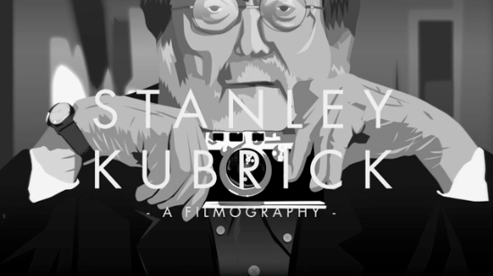

Mon, 09 May 2011 08:59:00 · Kubrik · films · animation · design · movie
a sleek animated tribute of stanley kubrik




A sleek animated tribute of Stanley Kubrik Filmography by French artist, Martin Woutisseth. The video nicely interprets the language of colour, motifs and typography that Kubrik used throughout his works. See full video here.